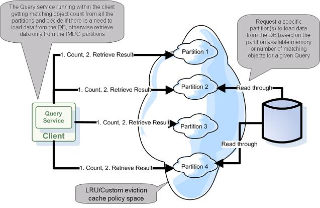

| Author | Product Version | Reference | Download |
|---|---|---|---|
| Shay Hassidim | 8.0 |
When having an application using a very large backend database leveraging the data grid, caching a subset of the application data, while running on-going data eviction policy with read-through policy (i.e. LRU cache policy mode with an External-Data-Source used), the main requirement is to access the database in the most optimal manner when performing queries against the data grid.
When using readById or readByIds operations looking for a single specific object(s), that cannot be found within the data grid (a cache miss), the database access is very minimal. Only one raw is retrieved from the database per object lookup activity via the space External Data Source (EDS) implementation.
But when performing queries, using readMultiple with a template or SQLQuery filter, that return a result set that may involve relatively large amount of objects, with an data grid running in LRU cache policy mode, the probability accessing the database retrieving large amount of data is very high:
readMultiple having Integer.MAX_VALUE as the max_objects parameter, every partition will access the database (parallel database access). This may overload the database.readMultiple having max_objects < Integer.MAX_VALUE the database might be accessed even if there are enough objects matching the query criteria across all the space partitions.The main motivation with the solution proposed below, is to have better control when a space partition is accessing the database. The space is inspected prior retrieving the data leveraging the ability to count matching objects to a given query very fast (via the in-memory indexes the space maintains). If there is an adequate amount of matching objects, the client will access the relevant space partition(s) and retrieve the data from the space without accessing the database.
Here is the full query execution strategy:
If there are enough objects within the clustered space:
If there are no enough objects within the clustered space:

Evicting data from the space can be done using the following options:
See the Custom Eviction section for details.
With the attached example the clustered space has 600 objects in memory:
The clustered space is using a dummy External Data Source. It does not leverage any database. It prints a message when the space needs to access the database to retrieve data.
The client performs 3 types of queries:
To run the example you should first run the data grid and later run the client. The example below explains how to run these within the IDE, but you can also modify these to run as a PU and deploy these into the GigaSpaces runtime environment.
The MyEDS class main method will start data grid with 3 nodes. Once the data grid is started, each partition will load the dummy data.
The Client class main method will start a client that will perform the above queries.